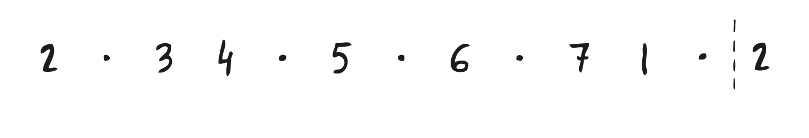

2nd harmonic env
Meditative

key of A (note = B)
key of Ab (note = Bb)
key of B (note = C#)
key of Bb (note = C)
key of C (note = D)
key of D (note = E)
key of Db (note = Eb)
key of E (note = F#)
key of Eb (note = F)
key of F (note = G)
key of G (note = A)
key of Gb (note = Ab)